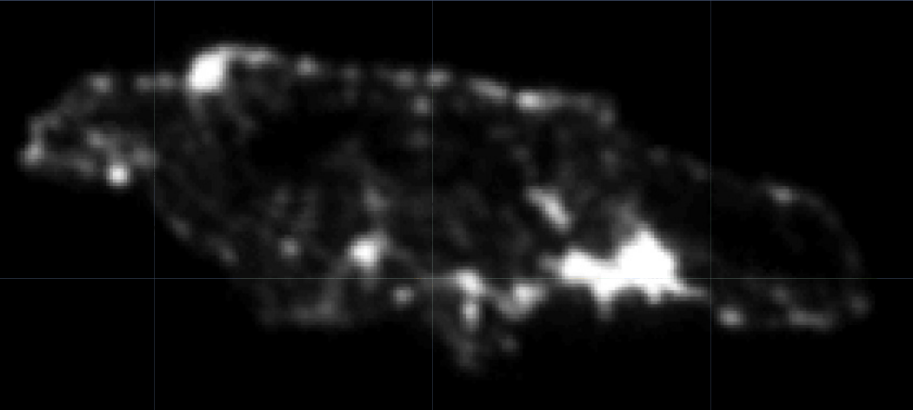
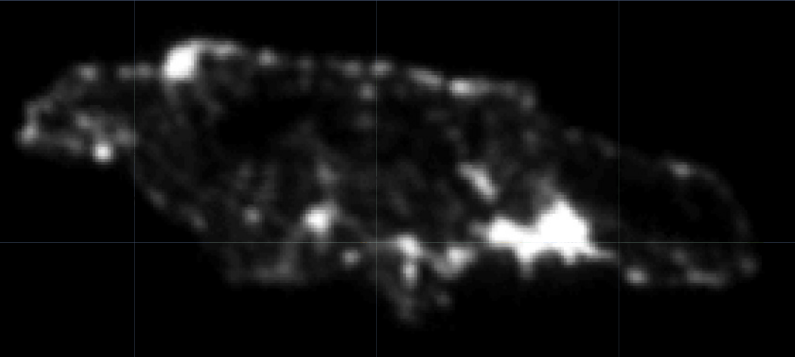

1.4 Installing rgee
Download and install Anaconda or Conda from here.
Open Anaconda Prompt and set up a working environment (Python environment JAM2023) using the following commands:
conda env list
conda create -n JAM2023 python=3.9
activate JAM2023
pip install google-api-python-client
pip install earthengine-api
pip install numpy- List available Python environments in Anaconda Prompt:
conda env list- Once you’ve identified the path of the JAM2023 environment, set it in R (remember to change \ to /).
- Install
reticulateandrgee, load packages for spatial processing, and set up the working environment as follows:
library(reticulate) # Connection with Python
library(rgee) # Connection with Google Earth Engine
library(sf) # Package for handling geographic data
library(dplyr) # Package for data processing
library(magrittr)
rgee_environment_dir = "C:/Users/gnieto/Anaconda3/envs/JAM2023/python.exe"
# Set up Python (Sometimes not detected and R needs to be restarted)
reticulate::use_python(rgee_environment_dir, required=T)
rgee::ee_install_set_pyenv(py_path = rgee_environment_dir, py_env = "JAM2023")
Sys.setenv(RETICULATE_PYTHON = rgee_environment_dir)
Sys.setenv(EARTHENGINE_PYTHON = rgee_environment_dir)- Once the environment is configured, you can initialize a Google Earth Engine session as follows:

Notes:
Each session must be initialized with the command
rgee::ee_Initialize(drive = T).JavaScript commands invoking methods with “.” are replaced by the dollar sign ($), for example:
1.4.1 Downloading Satellite Information
- Step 1: Have the shapefiles ready.
- Step 2: Select the image file you want to process, for example, night lights.
lights <- ee$ImageCollection("NOAA/DMSP-OLS/NIGHTTIME_LIGHTS") %>%
ee$ImageCollection$filterDate("2013-01-01", "2014-01-01") %>%
ee$ImageCollection$map(function(x) x$select("stable_lights")) %>%
ee$ImageCollection$toBands()- Step 3: Download the information.
## Takes about 10 minutes
lights_shape <- map(unique(shape$dam2),
~tryCatch(ee_extract(
x = lights,
y = shape["dam2"] %>% filter(dam2 == .x),
ee$Reducer$mean(),
sf = FALSE
) %>% mutate(dam2 = .x),
error = function(e)data.frame(dam2 = .x)))
lights_shape %<>% bind_rows()
tba(lights_shape, cap = "Average of night lights")| dam2 | stable_lights_mean |
|---|---|
| 0101 | 0.9393 |
| 0102 | 1.6857 |
| 0103 | 1.6900 |
| 0201 | -0.4380 |
| 0202 | 1.4627 |
| 0203 | 1.3519 |
| 0204 | 1.6333 |
| 0205 | 1.7522 |
| 0206 | 1.7522 |
| 0207 | 1.7444 |
Repeat the routine for:
Soil type: crops-coverfraction (Percentage of crop cover) and urban-coverfraction (Percentage of urban cover) available at https://developers.google.com/earth-engine/datasets/catalog/COPERNICUS_Landcover_100m_Proba-V-C3_Global#description
Travel time to the nearest hospital or clinic (accessibility) and travel time to the nearest hospital or clinic using non-motorized transport (accessibility_walking_only) information available at https://developers.google.com/earth-engine/datasets/catalog/Oxford_MAP_accessibility_to_healthcare_2019
Human modification, considering human settlements, agriculture, transportation, mining, energy production, and electrical infrastructure. You can find satellite information at the following link: https://developers.google.com/earth-engine/datasets/catalog/CSP_HM_GlobalHumanModification#description
Paso 4: Consolidate the information.
| dam2 | stable_lights_mean | crops.coverfraction_mean | urban.coverfraction_mean | gHM_mean | accessibility_mean | accessibility_walking_only_mean | stable_lights_sum | crops.coverfraction_sum | urban.coverfraction_sum | gHM_sum | accessibility_sum | accessibility_walking_only_sum |
|---|---|---|---|---|---|---|---|---|---|---|---|---|
| 0101 | 0.9393 | -0.5459 | 0.4390 | 0.5741 | -0.7760 | -0.9315 | -1.2660 | -0.5849 | -0.8078 | -1.1991 | -0.6242 | -0.8780 |
| 0102 | 1.6857 | -0.7090 | 2.2891 | 1.8346 | -0.8897 | -1.2588 | -1.7964 | -0.5947 | -1.2224 | -1.2993 | -0.6272 | -0.8873 |
| 0103 | 1.6900 | -0.3571 | 2.0344 | 1.7510 | -0.8684 | -1.2055 | -1.6990 | -0.5880 | -1.0667 | -1.2842 | -0.6269 | -0.8866 |
| 0201 | -0.4380 | -0.0874 | -0.6524 | -0.6504 | 0.0531 | 0.0511 | 1.0737 | -0.1234 | -0.6327 | 0.0186 | -0.2048 | -0.2380 |
| 0202 | 1.4627 | -0.6237 | 1.1018 | 0.8775 | -0.8226 | -1.0846 | -0.8523 | -0.5884 | 0.1016 | -1.1468 | -0.6231 | -0.8757 |
| 0203 | 1.3519 | -0.6402 | 0.9281 | 0.8771 | -0.6780 | -0.9356 | -0.8100 | -0.5891 | 0.0754 | -1.1302 | -0.6160 | -0.8673 |
| 0204 | 1.6333 | -0.5050 | 0.9165 | 1.0157 | -0.8334 | -1.1168 | -0.6630 | -0.5781 | 0.0671 | -1.1229 | -0.6232 | -0.8762 |
| 0205 | 1.7522 | -0.6844 | 2.3011 | 1.8174 | -0.8888 | -1.2573 | -1.2927 | -0.5937 | -0.0489 | -1.2119 | -0.6266 | -0.8856 |
| 0206 | 1.7522 | -0.4289 | 2.1777 | 1.8272 | -0.8968 | -1.2779 | -1.8138 | -0.5914 | -1.3125 | -1.3046 | -0.6273 | -0.8875 |
| 0207 | 1.7444 | -0.4662 | 1.7771 | 1.6966 | -0.8322 | -1.1072 | -1.5815 | -0.5898 | -1.0882 | -1.2650 | -0.6264 | -0.8850 |
 
